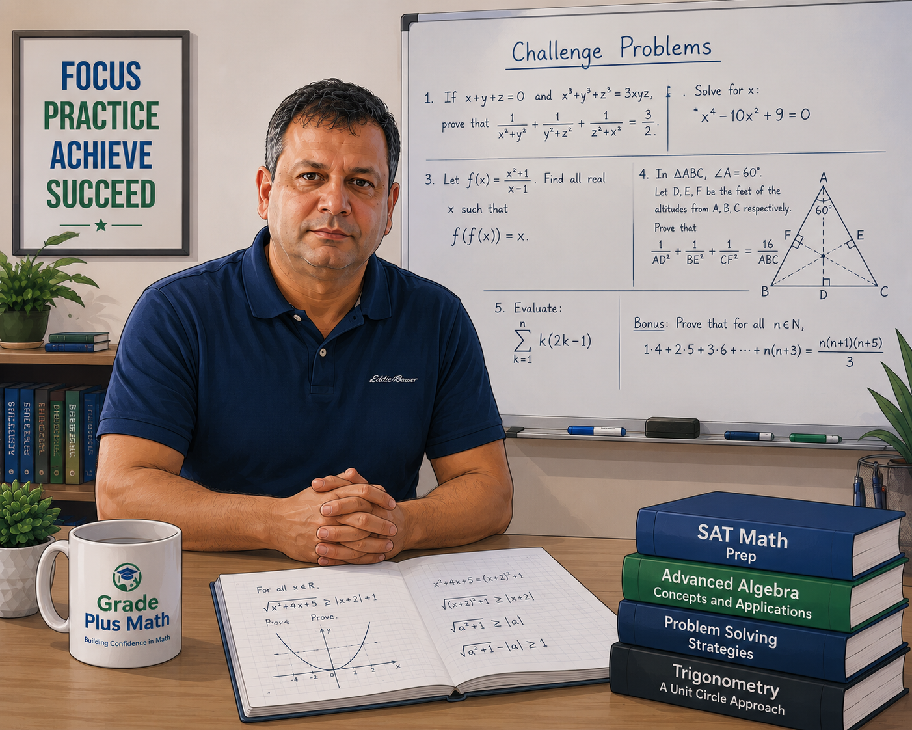

Building confidence, mastering math, and helping students achieve academic success through personalized instruction.

Founder & Instructor, Grade Plus Math
Welcome to Grade Plus Math! I'm founder and instructor at Grade Plus Math. I am passionate about helping students build confidence, master mathematical concepts, and achieve academic success through personalized instruction.
Every student learns differently. My goal is to make math engaging, enjoyable, and easy to understand while helping students develop strong analytical and problem-solving skills that extend beyond the classroom.
As both an educator and a parent, I understand that every child has unique strengths and learning needs. My teaching approach focuses on creating a supportive environment where students feel confident asking questions, overcoming challenges, and reaching their full academic potential.
To inspire confidence, strengthen problem-solving skills, and help every student reach their full academic potential.
Every lesson is tailored to each student's learning style and pace.
Clear explanations, engaging lessons, and years of teaching experience.
Students build confidence, improve grades, and achieve higher test scores.
Schedule a FREE assessment and discover how Grade Plus Math can support your child's academic journey.
Book Free Assessment